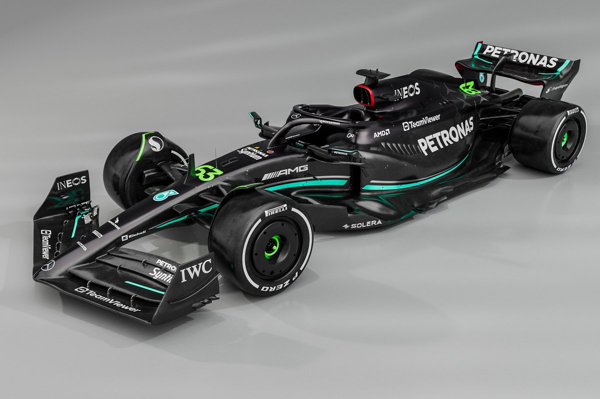

A Mercedes egy német Formula–1-es csapat, ami 2010 óta a Brawn GP utódjaként vesz részt a Formula–1-es világbajnokságban.A Mercedes-Benz már az 1930-as években is részt vett Grand Prix versenyeken.1934 és 1939 között Silberpfeile (Ezüstnyilak) névvel illették a Mercedes-Benz és az Auto Union igen sikeres versenyautóit.Ezüst színük a legenda szerint onnan származik, hogy a súlyuk csökkentésére lekaparták a festéket az autókról.
Sir Lewis Carl Davidson Hamilton, brit autóversenyző, hétszeres Formula–1-es világbajnok. A Mercedes pilótája. Miután számos gokart-bajnokságot megnyert, Hamilton tizenkét éves korában szerződést kötött a McLaren-Mercedesszel, hogy később a csapatnál fog autózni. 2007-ben, a Formula–1-ben eltöltött első évében remekül teljesített, és a világbajnokság második helyét szerezte meg, mindössze egy ponttal maradt le az első helyről. 2008-ban megszerezte pályafutása első világbajnoki címét, majd 2014-ben, 2015-ben, 2017-ben, 2018-ban, 2019-ben és 2020-ban is világbajnok tudott lenni. Futamgyőzelmek tekintetében Ő a legeredményesebb a Formula–1 történetében. A 2020-ban megszerezte 7. világbajnoki címét, és ezzel beérte Michael Schumacher rekordját. Ő az első a sportág történetében aki elérte a 100-as álomhatárt a pole pozíciók és a futamgyőzelmek tekintetében. Több tekintélyes szaklap a Formula–1 „élő legendájának” tartja. 2021. december 15-én lovaggá ütötték.

George William Russell brit autóversenyző, a 2017-es GP3-szezon és a 2018-as Formula–2 szezon bajnoka. 2019-től három szezonon át a Williams, majd 2022-től a Mercedes Formula–1-es csapatának versenyzője.Russell 2006-ban kezdte meg a gokartozást, majd 2009-ig haladt a kadét osztályon. 2018. október 12-én a Williams istálló hivatalosan is bejelentette, hogy a 2019-es világbajnoki szezonban ő lesz az egyik versenyzőjük. A gárda jelentősen lemaradva a mezőnytől, abszolút utolsó számú erőnek számított az évadban, Russell pedig egyetlen pontot sem tudott gyűjteni.